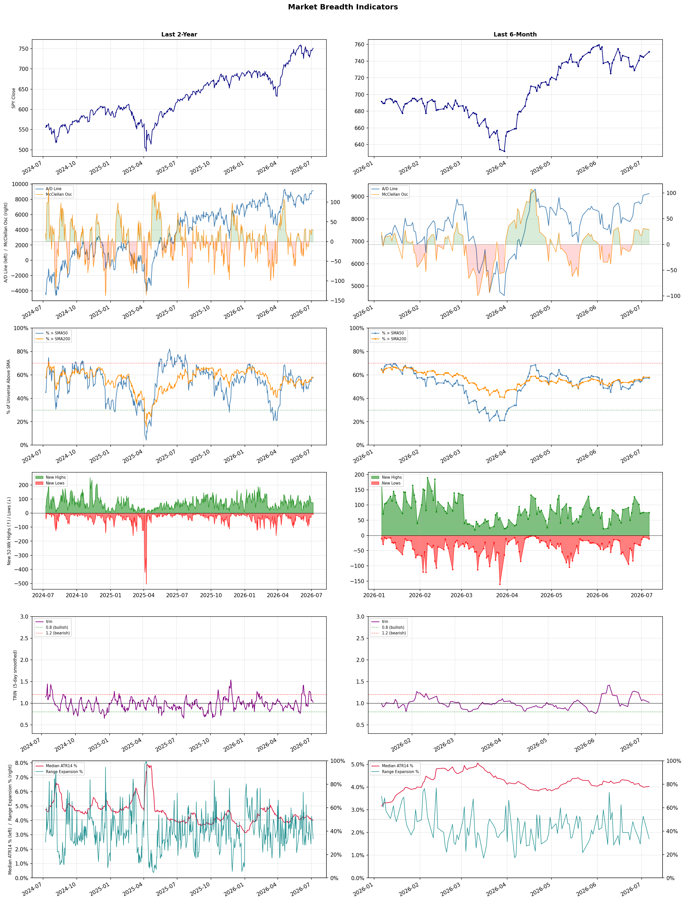

A daily market breadth and sector rotation report for active investors
| Item | Read |
|---|---|
| Regime | Selective Risk-On |
| Risk posture | Selective |
| Universe | 1,347 stocks tracked · 75 new 52-week highs · 30 active swing setups |
| Breadth | 57.3% of tracked stocks are above SMA50 — neutral range, new highs exceed new lows (75 vs 11) |
| Leadership | Healthcare Plans, Airlines, and Biotechnology |
| Weakest groups | Uranium, Gold, and Chemicals |
Use this report to prioritize research and chart review; validate entries, stops, liquidity, earnings, and risk before acting.
| Item | Read |
|---|---|
| Primary read | Selective Risk-On regime with Selective risk posture. |
| Research queue | CLOV, OSCR, HUM, PGNY, ALHC |
| Leadership focus | Healthcare Plans, Airlines, and Biotechnology |
| Caution list | Uranium, Gold, and Chemicals |
| Review prompt | Check extension risk, chart location, fundamentals, valuation, and earnings before using any research row. |
| Item | Read |
|---|---|
| Primary read | 0 active risk warnings; use screen output as watchlist input only. |
| Bullish screens | PGNY, ARWR, CPRX, MRNA, ILMN |
| Bearish screens | none |
| Alerts / levels | Automated trigger, stop, ATR, liquidity, reward/risk, and event-risk levels are pending future enrichment. |
| Review prompt | Open the linked chart, define trigger and invalidation, then check liquidity and event risk independently. |
Risk Posture: Selective — screen backdrop supports selective research in leading industries
Metric context: McClellan below -50 = elevated selling pressure; below -100 = washout territory. Range Expansion = share of stocks with daily range above their 20-day average. Signal Density = share of tracked names appearing in signal screens.
| Breadth Date | % > SMA50 | % > SMA200 | New Highs | New Lows | McClellan | Median Range | Avg Range | Median ATR14 | Range Expansion | Signal Density |
|---|---|---|---|---|---|---|---|---|---|---|
| 2026-07-06 | 57.3% | 57.9% | 75 | 11 | 29.0 | 3.5% | 4.1% | 4.0% | 33.5% | 4.3% |

Prior comparison date: July 2, 2026
| Metric | Prior | Current | Change |
|---|---|---|---|
| Regime | Selective Risk-On | Selective Risk-On | unchanged |
| Risk Posture | Selective | Selective | unchanged |
| % > SMA50 | 57.2% | 57.3% | +0.2 pts |
| % > SMA200 | 58.2% | 57.9% | -0.2 pts |
| New Highs | 75 | 75 | +0 |
| New Lows | 5 | 11 | -6 |
Top-10 industries entering: Banks - Diversified. Top-10 industries leaving: REIT - Hotel & Motel. New multi-signal long setups: AGNC, ALKS, ARWR, BBVA, BEN, CPRX, EQR, FROG, FTV, MET. New multi-signal short setups: none.
| Status | Tickers | Read |
|---|---|---|
| Added | AGNC, ALKS, ARWR, BBVA, BEN, CPRX, EQR, FROG | New technical screen matches vs prior report. |
| Removed | ABNB, ACHC, AFL, AHR, CB, CUZ, ELS, FLYW | No longer present in today's technical screen matches. |
| Still Active | BAC, BCS, EW, ILMN, NTRA, OKTA, PGNY, RSI | Appeared in both current and prior reports. |
| Promoted | none | Model Screen Score improved by at least 15 points. |
| Downgraded | none | Model Screen Score declined by at least 15 points. |
| Direction | Industry | ETF | Prior Rank | Current Rank | Days | Rank Change |
|---|---|---|---|---|---|---|
| Rose | Household & Personal Products | XLP | 91 | 12 | 28 | +79 |
| Rose | Building Products & Equipment | XHB | 91 | 15 | 42 | +76 |
| Rose | Insurance - Property & Casualty | KIE | 80 | 5 | 35 | +75 |
| Rose | Furnishings, Fixtures & Appliances | N/A | 98 | 33 | 42 | +65 |
| Rose | REIT - Healthcare Facilities | XLRE | 81 | 17 | 28 | +64 |
Bull: The Household & Personal Products sector is likely rising in relative strength due to its resilience in mixed consumer market conditions, as highlighted by the headlines discussing consumer stocks' mixed performance. Additionally, the mention of income ETFs outyielding the S&P 500 by more than 2 percent suggests that investors are seeking stable, income-generating investments, which household and personal product companies typically provide, especially during economic uncertainty. This trend is further supported by positive sentiment around specific companies like Church & Dwight, indicating a strong outlook for the sector amidst potential recession fears.
Bear: While the household and personal products sector may appear resilient, the mixed performance of consumer stocks indicates underlying volatility and uncertainty in consumer spending, which could negatively impact sales growth for companies in this space. Additionally, the focus on income-generating investments may reflect a flight to safety rather than confidence in the sector's growth potential, suggesting that investors are more concerned about preserving capital in a potential recession rather than seeking out high-growth opportunities. Furthermore, rising raw material costs and supply chain disruptions could further squeeze margins for these companies, undermining their profitability despite stable demand.
Verdict: The Household & Personal Products sector is experiencing a rise in relative strength due to its perceived resilience in uncertain economic conditions, as consumers prioritize essential goods and stability, driving demand for these products. However, the key risk lies in the potential volatility of consumer spending, exacerbated by rising raw material costs and supply chain disruptions, which could pressure margins and hinder sales growth. Investors should closely monitor these economic indicators and company-specific performance to gauge the sustainability of this upward trend.
Sources: Yahoo Finance, Google News
Bull: The Building Products & Equipment sector is experiencing a rise in relative strength primarily due to a resurgence in the housing market, as evidenced by the positive momentum in iBuyer stocks like Opendoor and Offerpad, which indicate increased consumer interest in home purchases. Additionally, the potential recovery of major homebuilders like Lennar and PulteGroup suggests that the sector is beginning to turn a corner after previous slumps, driven by stabilizing mortgage rates and improving economic conditions that are fostering a more favorable environment for construction and home improvement activities.
Bear: While there may be a temporary uptick in relative strength within the Building Products & Equipment sector, the underlying fundamentals remain concerning. Rising mortgage rates and persistent inflation could dampen consumer purchasing power and confidence, potentially leading to a slowdown in housing demand despite the recent rally in iBuyer stocks. Furthermore, the recovery of major homebuilders like Lennar and PulteGroup may be overstated, as any improvements could be short-lived if economic conditions falter or if supply chain issues continue to plague the industry.
Verdict: The Building Products & Equipment sector's rise is fundamentally driven by a rebound in the housing market, supported by stabilizing mortgage rates and increased consumer interest in home purchases, as reflected in the performance of iBuyer stocks. However, the key risk lies in the potential for rising mortgage rates and persistent inflation to erode consumer purchasing power, which could dampen housing demand and undermine the recovery of major homebuilders. Investors should closely monitor economic indicators and consumer sentiment to gauge the sustainability of this upward trend.
Sources: Yahoo Finance, Google News
Bull: The rising relative strength of the Property & Casualty (P&C) insurance industry can be attributed to ongoing digitalization and growth in exposure, as highlighted in the Yahoo Finance article discussing five P&C insurers to buy. Additionally, the positive sentiment reflected in multiple headlines about the State Street SPDR S&P Insurance ETF (KIE) suggests that investors are increasingly recognizing the sector's resilience and potential for profitability, even amid margin pressures noted by Evercore. This combination of technological advancement and favorable investor outlook positions the P&C insurance sector for continued strength.
Bear: While the rising relative strength of the Property & Casualty insurance industry may seem promising, it masks significant underlying challenges, such as persistent margin pressures highlighted by Evercore. The digitalization trend, while beneficial, also introduces increased competition and potential cybersecurity risks that could undermine profitability. Furthermore, the positive sentiment surrounding the State Street SPDR S&P Insurance ETF (KIE) may be overly optimistic, as it fails to account for potential economic downturns or regulatory changes that could adversely impact the sector's performance.
Verdict: The Property & Casualty insurance industry's rising strength is primarily driven by ongoing digitalization and increased exposure, which enhance operational efficiency and customer engagement. However, investors should remain cautious of the significant risks posed by persistent margin pressures and heightened competition, as well as potential economic downturns or regulatory changes that could negatively impact profitability. To navigate this landscape, stakeholders should focus on companies that effectively leverage technology while maintaining robust risk management strategies.
Sources: Yahoo Finance, Google News
Bull: The Furnishings, Fixtures & Appliances sector is experiencing rising relative strength primarily due to robust earnings reports from key players like La-Z-Boy (LZB), which recently surged 20% after strong Q4 results, indicating strong consumer demand and effective management. Additionally, the upcoming first-half results from Groupe SEB suggest positive momentum and investor interest in the consumer appliances segment, further bolstering confidence in the industry's growth prospects. This combination of strong earnings and anticipated positive performance is driving investor sentiment and capital inflows into the sector.
Bear: While recent earnings reports from La-Z-Boy may suggest strong consumer demand, it's essential to consider the broader economic context, including rising interest rates and inflation, which could dampen consumer spending in the furnishings and appliances sector. Additionally, the surge in stock prices may be more reflective of short-term market reactions rather than sustainable growth, as many consumers may prioritize essential spending over discretionary items in a tightening economic environment. The anticipated results from Groupe SEB could also underwhelm if they fail to meet inflated expectations, leading to a potential correction in the sector.
Verdict: The Furnishings, Fixtures & Appliances sector is experiencing rising relative strength primarily due to strong earnings reports from key players like La-Z-Boy, indicating robust consumer demand and effective management. However, the key risk lies in the broader economic context of rising interest rates and inflation, which could dampen consumer spending on discretionary items, potentially leading to a market correction if upcoming results from companies like Groupe SEB do not meet expectations. Investors should remain cautious and monitor economic indicators closely to gauge the sustainability of this growth trend.
Sources: Google News
Bull: The rising relative strength of Healthcare REITs can be attributed to the increasing demand for healthcare facilities driven by an aging population and heightened focus on health services, as suggested by the positive coverage in articles like "Best Healthcare REITs for 2026" and "5 Best Health Care REITs for a Retirement Portfolio." Additionally, the overall resilience of the healthcare sector, in contrast to the fluctuating financial stocks highlighted in multiple sector updates, indicates a flight to stability and growth potential in healthcare investments, further bolstering the attractiveness of healthcare REITs.
Bear: While the aging population and increased focus on health services may suggest a growing demand for healthcare facilities, the rising relative strength of Healthcare REITs could also be misleading due to broader market dynamics, such as the recent strength in financial stocks that may divert investor attention and capital away from healthcare investments. Moreover, potential headwinds like rising interest rates, which can negatively impact REIT valuations and their ability to finance acquisitions, along with ongoing regulatory pressures and reimbursement challenges in the healthcare sector, could undermine the long-term growth prospects of these REITs, making them a riskier investment in the current economic climate.
Verdict: The rising strength of Healthcare REITs is fundamentally driven by the increasing demand for healthcare facilities due to an aging population and a heightened focus on health services, positioning them as a stable investment amid market volatility. However, investors should remain cautious of key risks, particularly the potential impact of rising interest rates on REIT valuations and the ongoing regulatory challenges that could hinder long-term growth prospects in the sector.
Sources: Yahoo Finance, Google News
| Direction | Industry | ETF | Prior Rank | Current Rank | Days | Rank Change |
|---|---|---|---|---|---|---|
| Fell | Copper | COPX | 8 | 85 | 35 | -77 |
| Fell | Steel | SLX | 6 | 80 | 42 | -74 |
| Fell | Other Industrial Metals & Mining | N/A | 19 | 83 | 35 | -64 |
| Fell | Oil & Gas Equipment & Services | XES | 16 | 79 | 28 | -63 |
| Fell | Oil & Gas Integrated | XLE | 21 | 82 | 42 | -61 |
Bear: While the bull analyst points to a temporary dip in copper's relative strength as a reaction to global manufacturing concerns, the underlying fundamentals of the copper market suggest a more persistent issue. The recent headlines indicate a growing narrative that copper's valuation is being inflated by speculative interest in AI and technology, potentially leading to a correction as the market reassesses the sustainability of this demand. Furthermore, if global manufacturing indeed weakens, the demand for copper—often viewed as a bellwether for economic health—could decline significantly, exacerbating the ETF's downward trajectory.
Bull: Copper's relative strength is likely falling due to concerns over global manufacturing slowing down, as highlighted in the headline "If Global Manufacturing Weakens, Here’s What Happens to This Copper ETF." This sentiment is compounded by the broader market's focus on technology sectors, as seen in the emphasis on AI trades, which may divert investor attention away from copper and related ETFs. Additionally, the competitive positioning of copper against other metals like gold and silver in the context of the AI boom suggests that copper's potential may not be fully recognized in the current market environment.
Verdict: Copper's relative strength is likely falling due to concerns over global manufacturing slowing down, as highlighted in the headline "If Global Manufacturing Weakens, Here’s What Happens to This Copper ETF." This sentiment is compounded by the broader market's focus on technology sectors, as seen in the emphasis on AI trades, which may divert investor attention away from copper and related ETFs. Additionally, the competitive positioning of copper against other metals like gold and silver in the context of the AI boom suggests that copper's potential may not be fully recognized in the current market environment.
Sources: Yahoo Finance, Google News
Bear: While the bull analyst raises valid points regarding competition from emerging technologies and broader market conditions, the recent surge in steel prices and the supportive policies from Washington indicate a robust demand for steel, particularly as infrastructure projects ramp up. Furthermore, the relative strength trend may not fully reflect the long-term potential of the steel industry, as increased investment in infrastructure and manufacturing could lead to sustained growth, countering the bearish sentiment. Thus, the current market dynamics may actually favor steel over time, despite short-term fluctuations.
Bull: The relative strength of the steel industry, as represented by the SLX ETF, is likely falling due to broader market conditions and competition from other sectors, despite recent positive developments. Headlines indicate that while steel stocks are reaching new highs and benefiting from supportive policies, such as the recent win for steelmakers in Washington, the overall market sentiment may be overshadowed by emerging technologies like AI, which are drawing investment away from traditional industries like steel. Additionally, challenges highlighted in the Zacks report suggest that while there are gains in steel prices, the industry is still facing headwinds that could limit its relative performance compared to more dynamic sectors.
Verdict: The steel industry's recent decline is primarily driven by broader market conditions and competition from emerging technologies, which are diverting investment away from traditional sectors like steel. While supportive policies and rising steel prices suggest robust demand, the key risk lies in the potential for these gains to be overshadowed by ongoing headwinds and shifting investor sentiment towards more dynamic industries. Investors should remain cautious and monitor infrastructure spending trends and technological advancements that could further impact steel's relative performance.
Sources: Yahoo Finance, Google News
Bear: While the bull analyst attributes the sector's relative weakness to broader market dynamics and selective stock interest, it is crucial to recognize that the fundamental challenges facing the Other Industrial Metals & Mining sector are more pronounced. Factors such as declining global demand for traditional metals, increasing regulatory pressures, and rising production costs are creating significant headwinds that cannot be overlooked. Furthermore, the hype around AI and technological advancements may divert investment from traditional mining operations, leading to a long-term decline in the sector's viability and profitability.
Bull: The relative weakness in the Other Industrial Metals & Mining sector can be attributed to broader market dynamics and shifting investor sentiment, as highlighted by the focus on specific stocks and ETFs in recent headlines. The mention of "5 Best Mining Stocks for 2026" and "4 Best Metals ETFs for 2026" suggests that investors are gravitating towards select opportunities, potentially indicating a lack of confidence in the sector as a whole. Additionally, the emphasis on AI-powered innovations in mining, as noted by the Boston Consulting Group, may be shifting attention and investment away from traditional industrial metals, further contributing to the sector's declining relative strength.
Verdict: The falling trend in the Other Industrial Metals & Mining sector is primarily driven by declining global demand for traditional metals, compounded by rising production costs and increasing regulatory pressures that hinder profitability. Investors should be cautious, as the shift toward AI and technological innovations may further divert resources away from conventional mining operations, risking long-term viability in the sector. To navigate this landscape, focus on companies that are adapting to these challenges and leveraging new technologies to enhance efficiency and sustainability.
Sources: Google News
Bear: While the bull analyst highlights concerns over oil price volatility and the transition to alternative energy, it is essential to recognize that the Oil & Gas Equipment & Services sector is facing more immediate and significant headwinds, such as rising operational costs, supply chain disruptions, and geopolitical tensions that can further destabilize oil prices. Additionally, the increasing regulatory pressures and investments in renewable energy technologies may lead to a long-term decline in demand for traditional oil and gas services, making the sector less attractive to investors despite any short-term price surges. This suggests a more bearish outlook for the XES ETF as it grapples with these structural challenges.
Bull: The Oil & Gas Equipment & Services sector is experiencing a decline in relative strength primarily due to broader market concerns over oil price volatility and potential economic slowdowns, as indicated by headlines discussing ETFs that benefit from oil price surges without direct investment. Additionally, the focus on alternative energy sources and the transition towards sustainability may be overshadowing traditional oil and gas investments, as highlighted by the mention of outperforming oil equipment stocks despite industry headwinds. These factors suggest a cautious sentiment surrounding the sector, impacting its relative performance against other industries.
Verdict: The Oil & Gas Equipment & Services sector is likely experiencing a decline due to a combination of oil price volatility and long-term shifts towards renewable energy, which are overshadowing traditional investments. Key risks from the bear case include rising operational costs, supply chain disruptions, and increasing regulatory pressures that could further diminish demand for oil and gas services, potentially leading to a prolonged downturn in the sector. Investors should closely monitor these structural challenges when considering exposure to this industry.
Sources: Yahoo Finance, Google News
Bear: While the bull analyst attributes the Oil & Gas Integrated sector's relative strength decline to mixed market sentiment and short-term volatility, the underlying fundamentals suggest more significant headwinds. The ongoing geopolitical tensions, particularly the Hormuz crisis, could lead to supply disruptions and increased operational risks, which may ultimately weigh on profit margins and investor confidence. Furthermore, the long-term transition towards renewable energy sources and increasing regulatory pressures on fossil fuels could limit the growth potential and attractiveness of the sector, overshadowing any short-term gains from current geopolitical events.
Bull: The Oil & Gas Integrated sector is experiencing a decline in relative strength primarily due to mixed market sentiment and short-term volatility, as indicated by headlines highlighting energy stocks' mixed performance and late-afternoon declines. Additionally, the ongoing geopolitical tensions, such as the Hormuz crisis reshaping oil markets, create uncertainty that may be impacting investor confidence, despite some energy ETFs showing significant gains. This combination of mixed signals and geopolitical risks is likely contributing to the sector's relative weakness compared to other industries.
Verdict: The Oil & Gas Integrated sector's decline is primarily driven by underlying fundamentals that reflect significant headwinds, including geopolitical tensions that threaten supply stability and increasing regulatory pressures favoring renewable energy. While short-term volatility and mixed market sentiment may create temporary fluctuations, the long-term transition away from fossil fuels poses a critical risk to growth potential and profitability in this sector. Investors should closely monitor these geopolitical developments and regulatory changes, as they could further erode confidence and lead to sustained underperformance.
Sources: Yahoo Finance, Google News
| Industry | Rank | ETF | 7d | 14d | 28d | 42d | Chg 42d | Size | 20D | 60D | Composite | Active Setups |
|---|---|---|---|---|---|---|---|---|---|---|---|---|
| Healthcare Plans | 1 | IHF | 1 | 1 | 6 | 5 | +4 | 10 | 17.5% | 64.7% | 0.947 | 0 |
| Airlines | 2 | N/A | 3 | 6 | 27 | 42 | +40 | 8 | 24.1% | 38.8% | 0.942 | 0 |
| Biotechnology | 3 | XBI | 7 | 13 | 51 | 36 | +33 | 93 | 20.4% | 30.3% | 0.914 | 1 |
| Diagnostics & Research | 4 | N/A | 4 | 12 | 15 | 43 | +39 | 16 | 15.4% | 38.8% | 0.912 | 0 |
| Insurance - Property & Casualty | 5 | KIE | 9 | 34 | 65 | 52 | +47 | 8 | 23.9% | 25.1% | 0.910 | 1 |
| Health Information Services | 6 | N/A | 11 | 16 | 24 | 39 | +33 | 13 | 15.4% | 39.3% | 0.902 | 0 |
| Medical Care Facilities | 7 | IHF | 8 | 22 | 49 | 48 | +41 | 10 | 21.4% | 25.9% | 0.867 | 0 |
| REIT - Office | 8 | XLRE | 6 | 9 | 9 | 20 | +12 | 8 | 9.5% | 51.8% | 0.846 | 0 |
| Advertising Agencies | 9 | N/A | 14 | 17 | 33 | 59 | +50 | 8 | 12.2% | 55.1% | 0.846 | 0 |
| Banks - Diversified | 10 | N/A | 13 | 10 | 14 | 19 | +9 | 16 | 8.6% | 16.5% | 0.835 | 0 |
Rank columns (7d–42d) show the industry's rank that many trading days ago — lower is stronger. Chg 42d = rank change vs 42 trading days ago — positive means the industry moved up. 20D and 60D are the mean stock return within the industry over that period. Active Setups: count of today's swing-trade candidates from this industry appearing across all signal screens.
| Industry | Rank | ETF | 7d | 14d | 28d | 42d | Chg 42d | Size | 20D | 60D | Composite | Active Setups |
|---|---|---|---|---|---|---|---|---|---|---|---|---|
| Uranium | 88 | URA | 87 | 80 | 95 | 95 | +7 | 6 | -18.1% | -16.4% | 0.056 | 0 |
| Gold | 87 | GDX | 88 | 85 | 96 | 92 | +5 | 27 | -9.8% | -20.7% | 0.107 | 1 |
| Chemicals | 86 | N/A | 85 | 82 | 89 | 44 | -42 | 8 | -20.6% | -19.2% | 0.121 | 0 |
| Copper | 85 | COPX | 82 | 15 | 76 | 62 | -23 | 6 | -16.3% | -9.7% | 0.134 | 0 |
| Oil & Gas E&P | 84 | XOP | 84 | 86 | 41 | 40 | -44 | 26 | -14.4% | -15.4% | 0.159 | 0 |
| Other Industrial Metals & Mining | 83 | N/A | 79 | 46 | 73 | 33 | -50 | 21 | -17.5% | -1.7% | 0.162 | 1 |
| Oil & Gas Integrated | 82 | XLE | 80 | 77 | 23 | 21 | -61 | 10 | -12.9% | -10.9% | 0.199 | 0 |
| Agricultural Inputs | 81 | N/A | 83 | 87 | 94 | 64 | -17 | 5 | -2.6% | -15.6% | 0.233 | 0 |
| Steel | 80 | SLX | 77 | 40 | 12 | 6 | -74 | 5 | -18.4% | 3.7% | 0.237 | 0 |
| Oil & Gas Equipment & Services | 79 | XES | 60 | 70 | 16 | 18 | -61 | 18 | -14.9% | -4.0% | 0.246 | 0 |
Rank columns (7d–42d) show the industry's rank that many trading days ago — lower is stronger. Chg 42d = rank change vs 42 trading days ago — positive means the industry moved up. 20D and 60D are the mean stock return within the industry over that period. Active Setups: count of today's swing-trade candidates from this industry appearing across all signal screens.
These are research candidates from top-ranked stocks, capped at five names per industry to avoid over-concentration. Returns shown (60D, 120D, 250D) are historical — they reflect where prices have already moved, not forward expectations. Extension Risk flags names that may require extra patience or a better entry point. They are not buy signals.
Chart: TV = TradingView chart (opens in browser); PDF = local chart file (if downloaded).
| Ticker | Name | Industry | Industry Rank | Market Cap | 60D Hist | 120D Hist | 250D Hist | Extension Risk | Research Reason | Chart |
|---|---|---|---|---|---|---|---|---|---|---|
| CLOV | Clover Health | Healthcare Plans | 1 | N/A | 163.5% | 94.6% | 75.1% | Very extended | Top-ranked in industry; very extended | TV |
| OSCR | Oscar Health | Healthcare Plans | 1 | N/A | 114.8% | 77.3% | 87.0% | Very extended | Top-ranked in industry; very extended | TV |
| HUM | Humana | Healthcare Plans | 1 | N/A | 98.0% | 41.9% | 65.6% | Extended | Top-ranked in industry; extended | TV |
| PGNY | Progyny | Healthcare Plans | 1 | N/A | 82.7% | 14.6% | 44.2% | Extended | Top-ranked in industry; extended | TV |
| ALHC | Alignment Healthcare | Healthcare Plans | 1 | N/A | 15.3% | 18.2% | 86.9% | Constructive | Top-ranked in industry | TV |
| ULCC | Frontier Group | Airlines | 2 | N/A | 106.1% | 47.4% | 97.2% | Very extended | Top-ranked in industry; very extended | TV |
| AAL | American Airlines | Airlines | 2 | N/A | 55.6% | 11.0% | 53.1% | Extended | Top-ranked in industry; extended | TV |
| UAL | United Airlines | Airlines | 2 | N/A | 37.6% | 12.9% | 63.4% | Constructive | Top-ranked in industry | TV |
| LUV | Southwest Airlines | Airlines | 2 | N/A | 25.8% | 14.1% | 50.3% | Constructive | Top-ranked in industry | TV |
| JBLU | JetBlue Airways | Airlines | 2 | N/A | 20.2% | 16.8% | 40.9% | Constructive | Top-ranked in industry | TV |
| ABSI | Absci Corp | Biotechnology | 3 | N/A | 286.0% | 246.0% | 347.3% | Very extended | Top-ranked in industry; very extended | TV |
| SLS | Sellas Life Sciences | Biotechnology | 3 | N/A | 186.8% | 302.9% | 542.4% | Very extended | Top-ranked in industry; very extended | TV |
| DFTX | Definium Therapeutics | Biotechnology | 3 | N/A | 110.9% | 220.3% | 515.7% | Very extended | Top-ranked in industry; very extended | TV |
| MRNA | Moderna | Biotechnology | 3 | N/A | 57.0% | 138.5% | 173.6% | Extended | Top-ranked in industry; extended | TV |
| NRIX | Nurix Therapeutics | Biotechnology | 3 | N/A | 54.1% | 24.6% | 94.5% | Extended | Top-ranked in industry; extended | TV |
| TWST | Twist Bioscience | Diagnostics & Research | 4 | N/A | 95.3% | 182.9% | 180.8% | Extended | Top-ranked in industry; extended | TV |
| NEO | NeoGenomics | Diagnostics & Research | 4 | N/A | 84.4% | 15.2% | 107.4% | Extended | Top-ranked in industry; extended | TV |
| GH | Guardant Health | Diagnostics & Research | 4 | N/A | 81.8% | 53.2% | 240.8% | Extended | Top-ranked in industry; extended | TV |
| NTRA | Natera | Diagnostics & Research | 4 | N/A | 34.6% | 21.1% | 78.8% | Constructive | Top-ranked in industry | TV |
| WGS | GeneDx Holdings | Diagnostics & Research | 4 | N/A | 5.0% | -49.1% | -19.7% | Constructive | Top-ranked in industry | TV |
These are technical screen matches from existing signal files. They are not trade recommendations. Trigger, stop, ATR, liquidity, reward/risk, and event risk still require separate validation until those inputs are available.
Model Screen Score is weighted by signal count, industry rank, freshness, and setup type. It is not a probability of profit, expected return, or suitability rating. Industry cap: max 3 candidates per industry.
Signal glossary: Momentum Pullback = stock in an uptrend that has pulled back 10–30% and shows re-entry conditions. MA Compression = short- and long-term moving averages converging, often preceding a directional move. Three-Day Up/Down = three consecutive closes in the same direction. New 52Wk High/Low = price reached a new annual extreme.
Chart: TV = TradingView chart (opens in browser); PDF = local chart file (if downloaded).
| Ticker | Industry | Setups | Close | Industry Rank | Signal Count | Model Screen Score | Reason | Chart |
|---|---|---|---|---|---|---|---|---|
| PGNY | Healthcare Plans | New 52Wk High; Three-Day Up | 30.93 | 1 | 2 | 100 | Multi-signal; top industry breakout | TV |
| ARWR | Biotechnology | New 52Wk High; Three-Day Up | 86.55 | 3 | 2 | 100 | Multi-signal; top industry breakout | TV |
| CPRX | Biotechnology | New 52Wk High; Three-Day Up | 31.50 | 3 | 2 | 100 | Multi-signal; top industry breakout | TV |
| MRNA | Biotechnology | New 52Wk High; Three-Day Up | 81.80 | 3 | 2 | 100 | Multi-signal; top industry breakout | TV |
| ILMN | Diagnostics & Research | New 52Wk High; Three-Day Up | 194.33 | 4 | 2 | 93 | Multi-signal; top industry breakout | TV |
| NTRA | Diagnostics & Research | New 52Wk High; Three-Day Up | 283.80 | 4 | 2 | 93 | Multi-signal; top industry breakout | TV |
| BAC | Banks - Diversified | New 52Wk High; Three-Day Up | 59.90 | 10 | 2 | 85 | Multi-signal; top industry breakout | TV |
| BBVA | Banks - Diversified | New 52Wk High; Three-Day Up | 26.14 | 10 | 2 | 85 | Multi-signal; top industry breakout | TV |
| BCS | Banks - Diversified | New 52Wk High; Three-Day Up | 28.41 | 10 | 2 | 85 | Multi-signal; top industry breakout | TV |
| ALKS | Drug Manufacturers - Specialty & Generic | New 52Wk High; Three-Day Up | 55.14 | 14 | 2 | 85 | Multi-signal; new-high strength | TV |
| OKTA | Software - Infrastructure | New 52Wk High; Three-Day Up | 148.60 | 16 | 2 | 77 | Multi-signal; new-high strength | TV |
| MFG | Banks - Regional | New 52Wk High; Three-Day Up | 10.35 | 19 | 2 | 77 | Multi-signal; new-high strength | TV |
| WBS | Banks - Regional | New 52Wk High; Three-Day Up | 77.60 | 19 | 2 | 77 | Multi-signal; new-high strength | TV |
| MET | Insurance - Life | New 52Wk High; Three-Day Up | 90.46 | 21 | 2 | 77 | Multi-signal; new-high strength | TV |
| MFC | Insurance - Life | New 52Wk High; Three-Day Up | 41.36 | 21 | 2 | 77 | Multi-signal; new-high strength | TV |
| EQR | REIT - Residential | New 52Wk High; Three-Day Up | 69.93 | 25 | 2 | 77 | Multi-signal; new-high strength | TV |
| EW | Medical Devices | New 52Wk High; Three-Day Up | 95.18 | 27 | 2 | 70 | Multi-signal; new-high strength | TV |
| RSI | Gambling | New 52Wk High; Three-Day Up | 32.22 | 28 | 2 | 70 | Multi-signal; new-high strength | TV |
| SGHC | Gambling | New 52Wk High; Three-Day Up | 14.67 | 28 | 2 | 70 | Multi-signal; new-high strength | TV |
| YUM | Restaurants | MA Compression; Three-Day Up | 165.99 | 29 | 2 | 65 | Multi-signal; compression setup | TV |
| FROG | Software - Application | New 52Wk High; Three-Day Up | 98.10 | 42 | 2 | 65 | Multi-signal; new-high strength | TV |
| FTV | Scientific & Technical Instruments | New 52Wk High; Three-Day Up | 63.60 | 53 | 2 | 65 | Multi-signal; new-high strength | TV |
| SIRI | Entertainment | New 52Wk High; Three-Day Up | 30.75 | 56 | 2 | 65 | Multi-signal; new-high strength | TV |
| BEN | Asset Management | New 52Wk High; Three-Day Up | 34.44 | 58 | 2 | 65 | Multi-signal; new-high strength | TV |
| TROW | Asset Management | New 52Wk High; Three-Day Up | 119.12 | 58 | 2 | 65 | Multi-signal; new-high strength | TV |
| SCHW | Capital Markets | MA Compression; Three-Day Up | 100.62 | 51 | 2 | 60 | Multi-signal; compression setup | TV |
| TIGO | Telecom Services | New 52Wk High; Three-Day Up | 94.81 | 77 | 2 | 55 | Multi-signal; new-high strength | TV |
| AGNC | REIT - Mortgage | MA Compression; Three-Day Up | 11.17 | 67 | 2 | 50 | Multi-signal; compression setup | TV |
| NLY | REIT - Mortgage | MA Compression; Three-Day Up | 22.99 | 67 | 2 | 50 | Multi-signal; compression setup | TV |
| RTX | Aerospace & Defense | MA Compression; Three-Day Up | 201.37 | 70 | 2 | 50 | Multi-signal; compression setup | TV |
How To Use This Report
| Use | Purpose |
|---|---|
| Market map | Start with breadth, regime, risk warnings, and what changed since the prior report. |
| Industry scan | Use leading, deteriorating, rising, and declining industries to focus research. |
| Research queue | Treat long-term candidates as names for deeper fundamental, valuation, and chart review. |
| Technical review | Treat bullish and bearish screen matches as watchlist inputs that require independent trigger, stop, liquidity, and event-risk checks. |
| Source follow-up | Use chart links and source files to verify raw inputs before relying on any row. |
What This Report Is Not
| Not | Meaning |
|---|---|
| Investment advice | The report does not evaluate personal objectives, risk tolerance, tax situation, account type, or suitability. |
| Buy/sell recommendation | Named tickers are research candidates or screen matches, not recommendations to transact. |
| Price target | The report does not provide fair value estimates, targets, or expected returns. |
| Trade plan | Trigger, stop, sizing, reward/risk, liquidity, and event-risk review remain separate user work. |
| Performance claim | Model Screen Score is not validated historical performance or a forecast of future results. |
| Item | Note |
|---|---|
| Version | Daily Report Methodology v1 |
| Model Screen Score | Screen-fit rank based on signal count, industry rank, freshness, and setup type. |
| Not predictive proof | The score is not expected return, probability of profit, historical validation, or suitability analysis. |
| Industry ranks | Composite industry ranks use existing daily ranking outputs and historical rank columns when available. |
| Research candidates | Long-term rows are research candidates from ranked stocks and leading industries, with historical returns labeled as historical only. |
| Technical matches | Bullish and bearish rows are screen matches requiring independent chart, trigger, stop, liquidity, and event-risk review. |
| Source | Status | Rows | Path |
|---|---|---|---|
| Market breadth | present | 1253 | breadth_20260706.csv |
| Industry composite rankings | present | 88 | all_industry_composite_20260706.csv |
| Top ranked stocks | present | 190 | top_ranked_composite_20260706.csv |
| All ranked stocks | present | 1347 | all_stocks_composite_sorted_20260706.csv |
| Top momentum pullbacks | present | 1495 | top_momentum_pullbacks_20260706.csv |
| MA compression | present | 1495 | ma_compression_stocks_20260706.csv |
| Three-day up/down | present | 171 | three_day_up_down_stocks_20260706.csv |
| New 52-week members | present | 86 | breadth_new_52wk_members_20260706.csv |
This report is generated from automated technical screens and is for informational and research purposes only. It is not investment advice, a solicitation, or a recommendation to buy or sell any security. Past performance is not indicative of future results. You are solely responsible for your own investment decisions. Consult a licensed financial advisor before acting on any information herein.